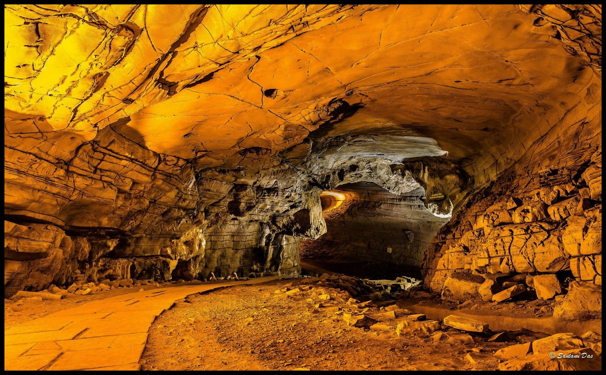
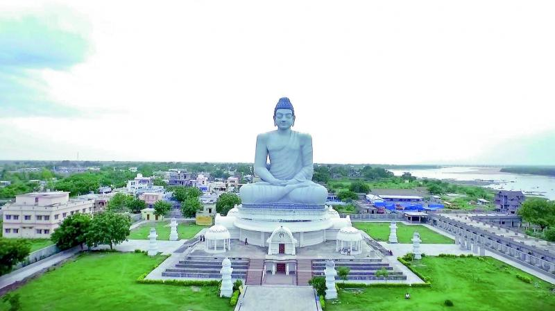
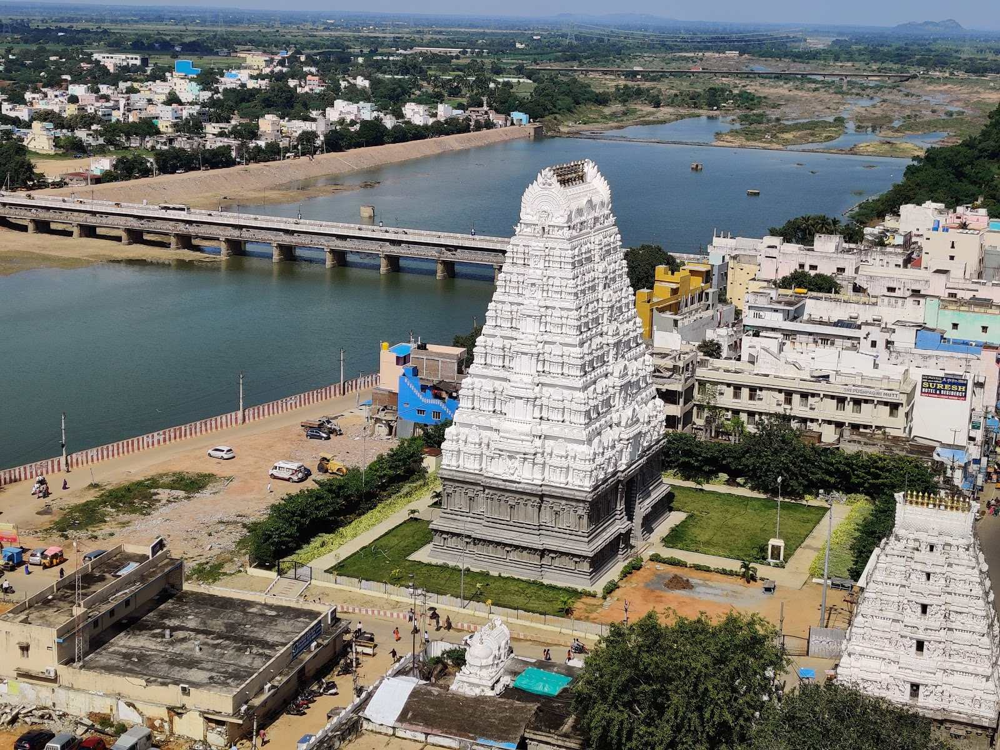
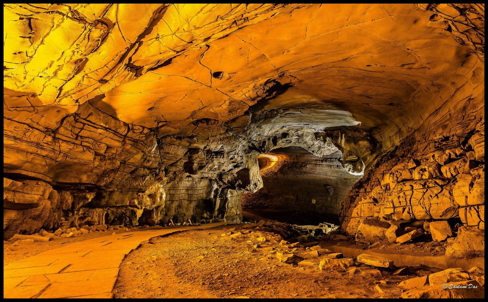
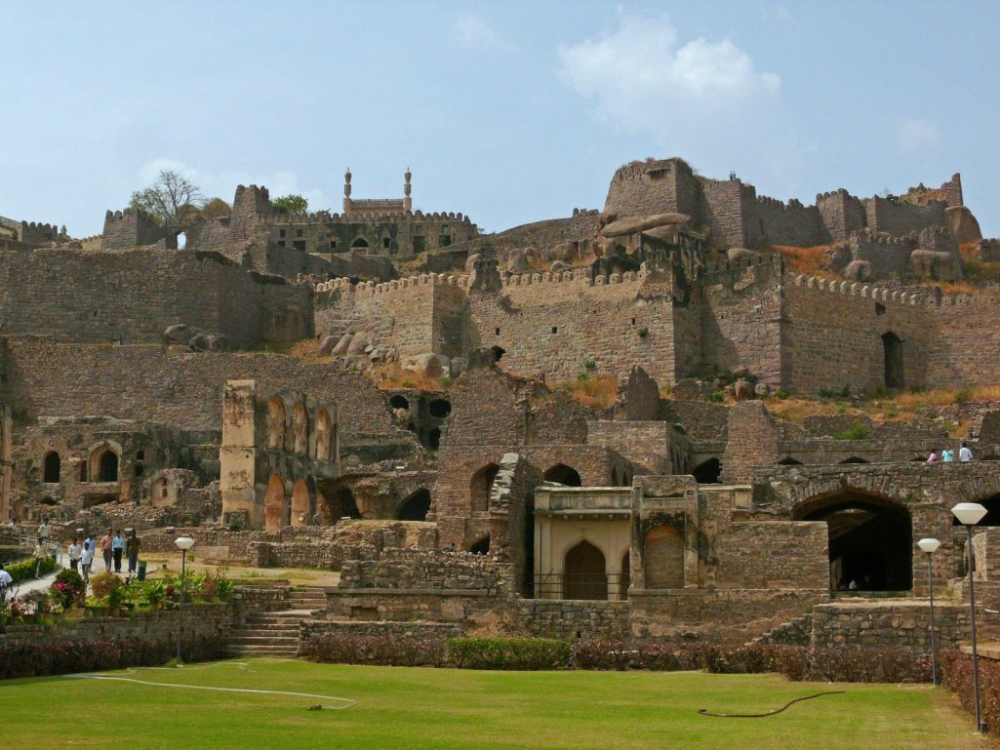
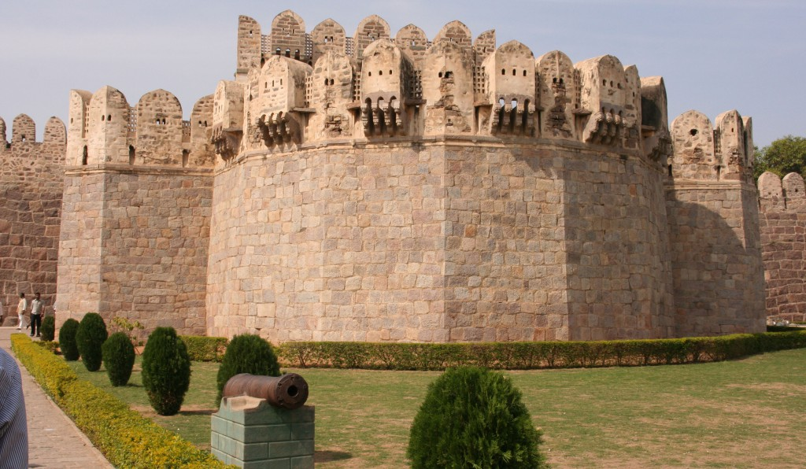
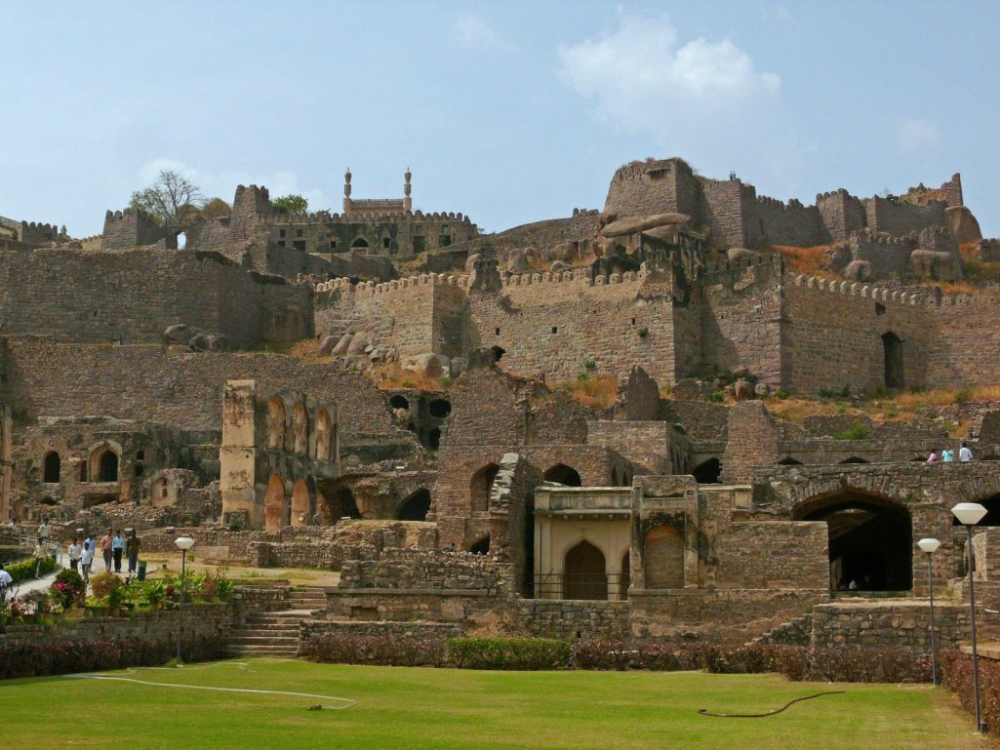
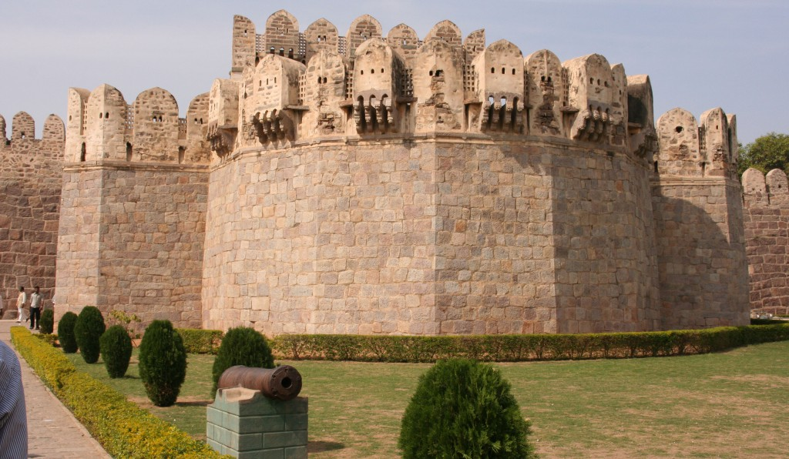

Belum Caves
Belum Caves are the second-largest caves in India, known for their stalactite and stalagmite formations, and archaeological significance.

Amaravati is the capital city of the Andhra Pradesh state, known for its historical and cultural significance.
Srikalahasti Temple is a famous Hindu temple located in the town of Srikalahasti, known for its architectural beauty and religious importance.
Belum Caves are the second-largest caves in India, known for their stalactite and stalagmite formations, and archaeological significance.

Golconda Fort is a historical fort in Hyderabad, known for its impressive architecture and historical importance.
 


